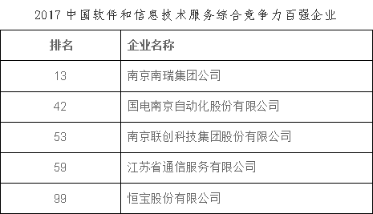
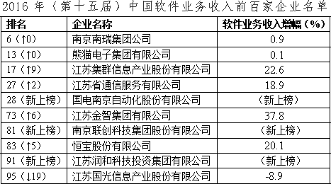
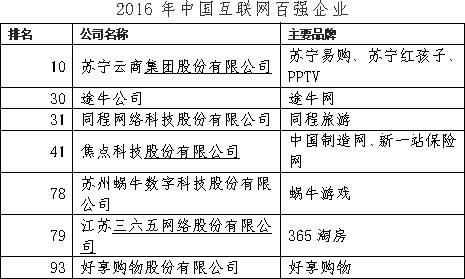
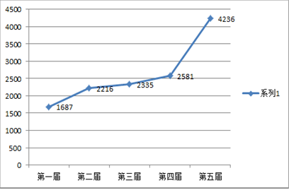
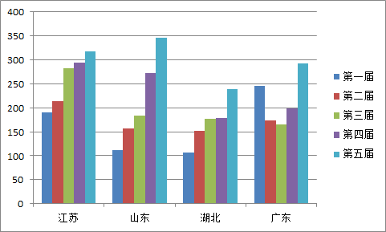
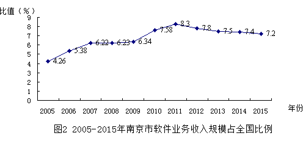
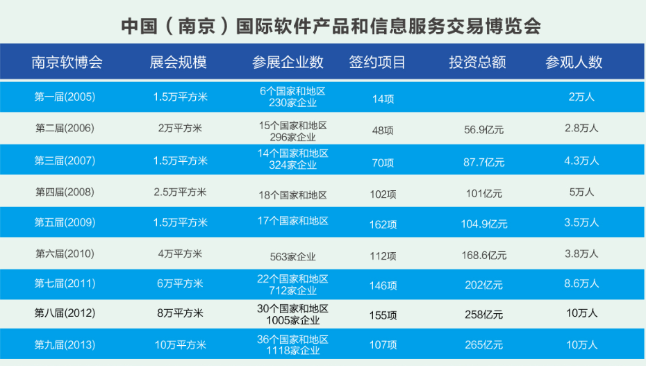

国内软件发展情况
江苏省（南京）发展情况
“i创杯”
（一）软件产业发展总体情况
软件和信息服务业是我省重点发展的战略性新兴产业。“十三五”以来，在工信部的指导下，在省委省政府的重视关心下，全行业共同努力，踏实践行创新、协调、绿色、开放、共享的发展理念，顺应发展大势，抢占发展先机，深化大数据示范应用，助力“互联网+”行动，打造具有竞争优势和江苏特色的互联网经济业态，为全省经济转型升级和建设“强富美高”新江苏提供有力支撑。
2016年，全省实现软件业务收入8165.6亿元，同比增长15.6%，占全国比重达16.9%，继续走在全国前列，产业规模10年增长近10倍，从业人员超过110万人。
（二）产业载体
全省软件产业空间布局走在全国前列，目前共有省级软件园25家（其中国家级软件园7家），各地以特色园区引领产业发展已进入新常态。“十三五”以来，为加快软件园向特色化、平台化和服务化转型，省市合作共建了17个省级互联网产业园、28个省级互联网众创园，以推动互联网融合创新，促进互联网企业进一步集聚发展。
互联网产业服务联动机制初步形成。截至2015年底，建成一批两化融合示范基地、新型工业化产业示范基地、智慧城市试点和信息消费试点城市。成立了江苏省互联网众创联盟，初步建成了省级互联网融合创新服务平台，为互联网产业资源共享、优势互补和错位发展搭建交流、合作平台。
（三）重点企业
（四）双创相关内容
1、“中国软件杯”大学生软件设计大赛
由工信部、教育部和江苏省政府联合主办的“中国软件杯”大学生软件设计大赛自2011年启动以来，已连续成功举办六届。大赛秉承“政府指导，企业出题，高校参与，专家评审，育才选才”的组织形式，聚集了国内百余家软件骨干企业参与出题;囊括了包括全部985、211高校在内的千余所本科和高职院校;吸引了万余支团队，近十万名软件及相关专业学生参赛，帮助国家软件百强企业和江苏骨干软件企业解决共性技术难题59道。以参赛者众多，影响力广泛而发展为全国软件行业规格最高、最具影响力的顶级软件设计大赛。
一、产教协同的实践平台重点软件骨干企业所出的赛题全部来自于实际研发中的需求，能够更多地考查学生实际操作能力和创新能力，弥补高校软件专业教育理论与实践结合的不足。同时，参赛学生提交的优秀作品，也直接给企业的研发提供了帮助，促进软件行业的技术发展。据评审专家介绍，每届大赛均能涌现出一批高品质的作品，有些赛队给出的解决方案已经达到工业级软件水平，可直接应用于生产生活。二、引培并举的人才高地“搭建就业意向平台，实现企业与优秀软件人才的无缝对接”一直以来都是大赛组委会的核心工作之一，每届大赛为众多软件百强骨干企业输送了众多优秀人才，有些选手已经成为企业的中坚力量，带领团队开发项目，同时，也有很多团队的项目签约投融资机构，进行孵化和研发。如第二届大赛的获奖选手金恺和邵楚育于2014年正式入职国瑞信安，主要参与研发的软件新产品已在全国公安系统列装，2015年即为企业创造了近亿元的收入。
三、创新创业的福地沃土历届大赛产生了众多优秀项目和创业团队，部分项目已具有较强的创新性和较大的市场应用价值。近几届大赛决赛均配套举办针对优胜参赛团队的“创业投融资对接会”，邀请知名投资机构为参赛师生提供创业咨询和投资孵化服务，同时也为投资机构搭建挖掘和遴选优秀创业项目、团队的平台，促进双方资源有效对接，形成创新创业的良好发展氛围。
四、校企协作的桥梁纽带历届大赛产生了众多优秀项目和创业团队，部分项目已具有较强的创新性和较大的市场应用价值。近几届大赛决赛均配套举办针对优胜参赛团队的“创业投融资对接会”，邀请知名投资机构为参赛师生提供创业咨询和投资孵化服务，同时也为投资机构搭建挖掘和遴选优秀创业项目、团队的平台，促进双方资源有效对接，形成创新创业的良好发展氛围。
五、赢得国内外高校关注认可历届大赛参赛规模稳增，参赛高校数过数百所，参赛学生近万名，覆盖全国31个省、市、自治区。其中，江苏、山东、湖北、陕西、广东、吉林等省份组织得力、报名踊跃，参赛队伍数量位居前列。  
首个“中国软件名城”、国家级软件产业基地、国家级软件出口创新基地、国家科技体制综合改革试点城市、国家级两化融合试验区、国家三网融合试点城市、首批国家信息消费试点城市
一、产业规模
2015年南京市完成软件和信息服务业收入4091亿元，同比增长22%，其中软件业务收入达到3094亿元，同比增长13%，产业规模占全国的7.2%、占江苏省的43.8%，继续保持了全国城市第四、全省第一。2016年上半年，南京市完成软件和信息服务业收入2195亿元，同比增长15.7%。其中完成软件业务收入1623亿元，同比增长12.9%。
二、名园建设
(1)3个国家级软件产业集聚区（中国（南京）软件谷、南京软件园、江苏软件园“一谷两园”）；
(2)3个省级软件产业集聚区（徐庄软件园、江东软件城、新城科技园）；
(3)3个省级互联网产业园（中国（南京）软件谷、白下高新园、栖霞移动互联网产业基地）；
(4)软件产业建筑面积近1600万平方米；
(5)“一谷两园”集聚效应凸显；
(6)2015年“一谷两园” 合计完成软件和信息服务业收入2953亿元，占全市的72%左右。
三、名企培育
(1)30家世界500强软件企业在南京落户；
(2)36家中国软件百强企业在南京落户；
(3)软件和信息服务业收入超亿元企业347家，超十亿元40家，超50亿元企业6家，超百亿元企业5家；
(4)12家国家规划布局内重点软件企业；
(5)71家涉软上市（挂牌）企业；
(6)2涉软企业超过3700家；
(7)8家企业入选中国软件业务收入前百家企业名单；
(8)4家企业入选中国互联网企业100强企业名单；
(9)南京市11项产品获江苏省优秀软件产品奖，占全省的41%；
(10)累计8项软件产品获“中国驰名商标”，11项软件产品获“江苏省著名商标”。
四、名品创建
发展自主可控的嵌入式操作系统、工业实时数据库、基于国产软硬件的电子文件系统等基础软件。突破自主可控的制造业软件关键技术，建立工业研发设计平台和生产经营管理平台，开发面向石化、钢铁、汽车、电力、轨道交通等重点领域的研发设计类、数字控制类、智能生产类和管理类工业软件。
五、人才建设
(1)全市涉软从业人员超过64.6万人；
(2)全全市高校软件及相关专业学生17万人，每年毕业5；
(3)累计34位优秀企业家当选“南京市软件产业年度领军人物”，20位企业家入选成长型软件企业家培育计划名单；
(4)全市拥有45家市级以上软件培训基地，年培训规模8万人次。
六、名牌展会
七、公共服务平台建设
(1)公共技术平台：
南京超级云计算服务中心、南京云计算中心、北斗区域(江苏)位置网平台、江苏北斗地基增强平台和江苏省卫星导航(北斗)产品质量监督检验中心。
南京数字文化产业公共技术服务平台、徐庄软件园集成电路设计EDA工具库平台、江苏软件产品质量监督检验中心、SAP中小企业信息化服务平台、秦淮紫云云计算平台。
南京通用软件公共技术服务平台、南京市增材制造（3D打印）公共技术服务平台。
(2)技术创新平台:
省级以上重点实验室5家;
省级以上工程技术中心40家;
省级以上企业技术中心28家;
江苏赛联信息产业研究院;
江苏联创软件研究院。
(3)技术创新平台:
中国南京软件网;
南京市软件知识产权服务中心;
南京软件产业博览馆;
中国（南京）国际软件产品和信息服务博览会。
(4)技术创新平台:
江苏软件人才培训联盟暨省软件人才公共培训中心;
南大软件学院软件谷分院;
南京软件科技大学（筹）;
江苏软件园微软（南京）IT学院;
江苏软件园中软国际人才培训中心;
南京软件园甲骨文培训基地。
(5)投融资服务平台:
南京市产业和资本融合促进中心（VC/PE紫金俱乐部）;
南京银行、江苏银行、工商银行等科技银行。
八、经济社会贡献
软件产业加速向经济社会各领域渗透，对提升城市能级、优化产业结构、提高城市功能品质形成了有力支撑。
促进经济快速发展。按照软件产业增加值率全国平均水平测算，南京软件和信息服务业增加值已占全市GDP的10%左右，软件产业已逐步发展成为我市支柱产业。
促进产业结构优化。南京软件产业占电子信息产业的比重由2010年的41.1%增长到2015年的56.8%，促进了电子信息产业结构的优化升级。以大数据、云计算、互联网为代表的新一代信息技术产业在快速发展的同时，对石化、汽车、钢铁等传统产业的改造和提升作用日益明显，同时支撑装备制造、智能电网、轨道交通等战略性新兴产业的快速发展。特别是在全市工业生产增速总体低位运行的情况下，软件和战略性新兴产业保持了较高的增幅，软件和信息服务业增加值率高于钢铁产业增加值率的2倍以上。
显著提升城市功能品质。软件产业单位增加值能耗较低，远低于万元GDP能耗0.6吨标煤的全市平均水平，同时软件企业基本没有“三废”排放。软件产业的快速发展吸纳了大量的高校毕业生和科技人员，涉软从业人员占全市从业人员总数的比重由2010年的3.27%上升到2015年的10%以上，大大改善了从业人员结构，提升了城市品质。
“i创杯”互联网创新创业大赛由省经信委主办，省委组织部、省互联网信息办公室、省教育厅、省财政厅、共青团江苏省委员会、省青年联合会等省委省政府多个部门共同支持。作为省内专注于互联网领域的最高规格赛事，“i创杯”的举办进一步引爆了江苏创新创业的热点。
2015、2016年的前两届比赛，吸引了百家媒体全程跟踪，百家投资机构和知名互联网企业参与，1700+创业项目报名，累计100万+创业者参与互动和对接，集齐赛事最强阵容。据不完全统计，近百个参赛项目已有融资经历或在赛后获得新一轮融资。
前两届大赛的基础上，第三届“i创杯”在今年5月甫一启动就吸引各方关注，截止报名结束，共有近1200个项目报名参赛。
35场巡回路演火力蔓延——在本届大赛巡回路演更是在去年省内外25场辉煌战绩基础上，再次突破达到35场。从最北端的哈尔滨,到最南端的香港，覆盖北京、上海、深圳、杭州、南京、无锡等省内外互联网高地，浓墨重彩谱写 “i创杯”赛事新篇章。巡回路演活动的火热开展，使大赛辐射至更多城市和创业者，为“i创杯”进行了最生动有力的宣传和代言，为大赛打造的平台效应提供了最广范围、最佳效果的展示。
50余天，17个城市，660+项目，180+投资人，350+投资邀请函，317万人次在线观看，“i创杯”走遍全国互联网创新创业高地。
搭建投融资平台推动对接高效率——6月6日-7月20日，整个路演阶段，34个项目在激烈交锋中脱颖而出，获得直通本届“i创杯”决赛的PASS卡，99个项目获得直通复赛的资格。共有180位评委在此期间对心仪项目发出了超过350张投资邀请函。6月下旬参与路演的无锡某智能硬件项目创造了本届大赛最快融资记录，在路演后两周内就成功获得了大赛评委的投资。此外，相当一批参赛的优质项目也已成为众多参与大赛投资机构的追踪热点，大赛作为连接创业者和投资人的高效率投融资平台作用进一步显现。
赛培并举贯穿全程——在密集路演赛事中，“i创杯”还在南京、无锡、徐州等地组织了多场“特训营”活动，邀请20多名知名创投机构投资人对创业项目进行深入对接打磨、全面辅导提升。以“赛培并举”的形式，让参加巡回路演的创业者们在路演技巧上得到锻炼，在项目实力上得到提升，在运营思路上得到启发。
百余家媒体追踪影响力爆棚——巡回路演进一步提升了大赛影响力，网易新闻对35场巡回路演的网络直播总计吸引了317万人次在线观看。其中6月28日，南京、徐州、常州三场路演同时进行，当日共有26.2万人次观看，创下巡回路演直播记录。巡回路演期间还特设了“i创课堂”环节，每场7位评审在赛后逐一向选手传授路演技巧和融资秘籍。
这个夏天，“i创”旋风不停歇——7月28日-7月31日，大赛组委会根据参赛项目的条件进行形式审核和资格确认，并组织56位评审专家根据组委会统一的评审标准对报名项目分组进行线上打分，确定晋级复赛名额。通过巡回路演PK获得直通复赛机会的选手将和通过严格的线上初审闯入复赛的选手即将在8月下旬会师。
“i创杯”，这个夏天，你绝对不容错过的互联网盛事！
与产业紧密结合——专注于互联网领域，以创新创业为切入点，实现对产业的促进和带动。结合地方产业发展需求，与地方开展合作，实现项目落地。2015南京市江宁区建设石塘互联网小镇，完成了互联网小镇建设整体规划论证与配套设施建设计划，建成了互联网创业综合体一期工程，确定为“i创杯”互联网创新创业大赛决赛固定会址。同时，江宁区各部门、街道、园区为“i创杯”晋级决赛项目量身定做“政策包”，赛后数个项目落户江宁。
发掘项目与人才——通过举办大赛，发现和培育“新技术、新产品、新模式和新业务”，寻求“互联网+”带动传统产业转型升级的解决方案。大赛面向团队组和企业组两类对象，除了培育创意，更多从产业生态角度考虑，重视成熟度高的产业化项目，充分发挥“互联网+”对经济的引擎、带动作用。同时，第三届“i创杯”互联网创新创业大赛创新性探索市场化运作，在更大范围内推动双创高潮。
促进资源大汇聚——依托大赛打造平台，实现创意、项目、资金、资源与人才的集聚与流通，推动实现合作、投融资及项目与人才的成长。创业者在i创杯可以获得：贯穿赛事全程的多主题培训，360度无死角提升创业能力；与其他创业小伙伴的pk与互动，寻找志同道合的伙伴；与最多数量的投融资机构深度亲密接触，发现自身价值；获得政府政策助力，赢取50-100万不打折扣的专项资金支持；迎来最强曝光热度，获得被百余家媒体追踪项目全面宣传的机会……
营造互联网氛围——大赛全程，发动全省各相关部门、经信系统、各省级互联网产业园与众创园45家、各类互联网创新创业服务机构、新老媒体超百家、国内知名创投机构超百家，共同参与大赛活动，营造了浓厚的互联网创新创业氛围，引爆了江苏创新创业热点。今年大赛中，无锡、徐州等地的组织力度和深度较往年有大幅提升，分别组织了融入“i创杯”巡回路演赛程的地方分赛，并对获奖选手给予大力支持。围绕产业转型发展、培育新经济增长，整合当地创新创业资源，让各类人才创新有条件、创业有舞台、创富有机会，展现了两地信息产业快速发展的良好势头和面貌。
伴随着“互联网+”概念的深入，“i创杯”将会进一步营造江苏互联网创新创业氛围。促进互联网的创新成果与经济社会各领域深度融合，形成经济发展新动能，为江苏“创新驱动发展”的蓝图贡献力量。